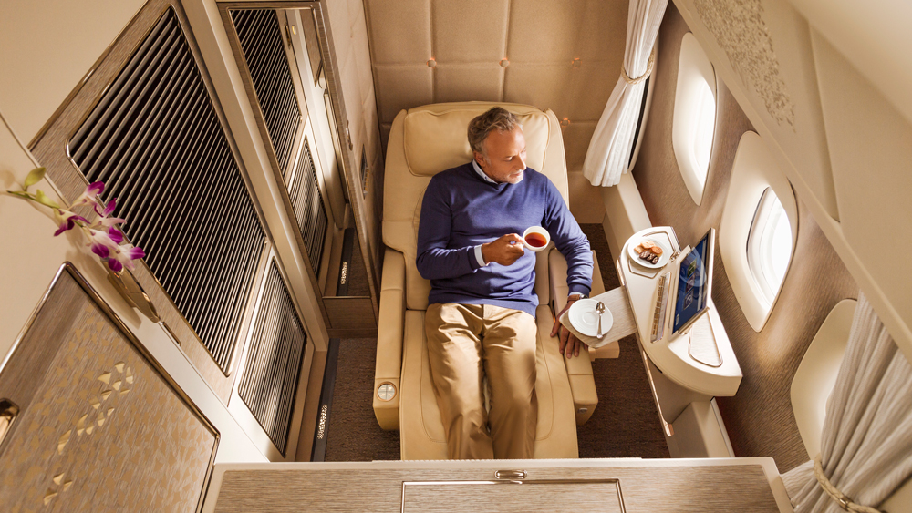

Tras 18 meses de pausa y en los que solo visitamos destinos cercanos, los mexicanos están empezando poco a poco a descubrir de nuevo el mundo y disfrutar una vez más experiencias de viaje en el extranjero.
Tres de cada diez mexicanos buscan sugerencias para ahorrar y poco más del 35% por ciento prefiere planes flexibles para gastar menos en su próximo viaje. Expedia y ARC se unen para compartir la guía de viajes definitiva para el próximo año.
Según los datos de Airlines Reporting Corporation (ARC), el precio promedio de los vuelos nacionales alcanzó su nivel más bajo en diciembre 2020 y enero 2021. Conforme la gente vuelve a recuperar la confianza para viajar y con el aumento de la demanda, en especial durante el verano, los precios de los boletos de avión comenzaron a recuperarse a sus niveles previos a la pandemia.
Por otro lado, los precios promedio de los vuelos internacionales han subido de forma constante a lo largo del año; sin embargo, siguen un 35 por ciento más bajos si los comparamos con el 2019.
Para vuelos nacionales e internacionales en clase económica, los precios suelen empezar a subir 21 días antes de la fecha de salida.
El mejor momento para reservar boletos de avión para vuelos nacionales es con 1 – 2 meses de anticipación; y para vuelos internacionales es con 4 – 5 meses de anticipación.
El día perfecto para comenzar un viaje nacional es sábado en contraste al miércoles. Los pasajeros pueden ahorrar cerca del 20 por ciento.
En cuanto a viajes internacionales, es mejor que empiecen el jueves y evitar el domingo para conseguir hasta un 15 por ciento de descuento.
Las personas que planean viajar en 2022 también pueden acceder a grandes descuentos si tienen fechas flexibles y eligen el mes indicado para viajar:
En vuelos nacionales, el mes ideal para viajar es octubre, cuando los pasajeros pueden ahorrar hasta un 20%, en contraste con julio.
En vuelos internacionales, febrero es el mes ideal y en el que los pasajeros pueden ahorrar casi un 15%, en contraste con julio.
Los boletos en clase económica premium están más baratos que nunca y se han vuelto más accesibles en los últimos años. En 2021, los precios promedio en clase económica premium eran un 135% más caros que los de la clase económica, mientras que en 2020 eran un 195% más caros.
Antes de la pandemia, en 2019, los precios promedio de un boleto en clase económica premium eran un 230% más caros que en la clase económica. Con el 35% de los mexicanos buscando vuelos en categorías más altas si está dentro de sus posibilidades económicas, este es un buen momento para darse ese lujo.
